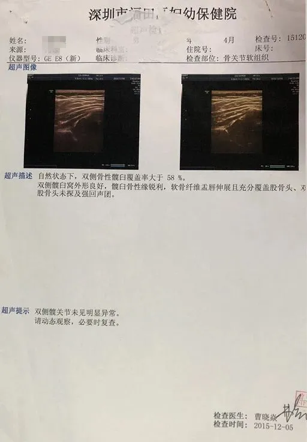
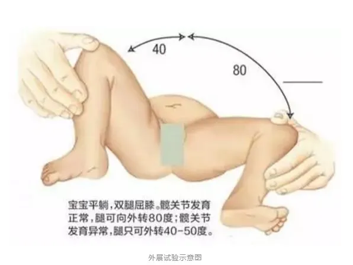
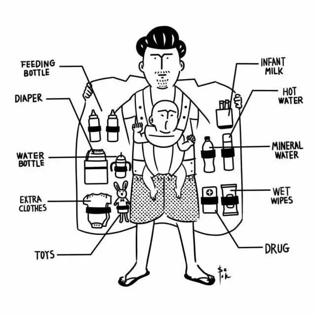

文|圆圈妈，
图|网图/侵删
正 · 文 · 来 · 啦 ·
前段时间双胞胎奶爸群有宝爸说发现其中一个宝宝的腿纹不对称，担心髋关节发育不良。
无独有偶！
圆圈兄弟4月龄，我与这个有点陌生的名词--髋关节，也有过一场很WOMAN的较量！
这篇推文跟大家分享下，当双胞胎宝宝体检遇到髋关节发育异常时，我的怂样！
【01】
在妈妈群里经常看到一些孕妈发愁胎儿的大小怎么不长，哀叹自己的体重怎么才长这么点，时常因为产检化验单上上下下的箭头提示黯然神伤。
作为一对双胞胎男孩的妈妈，我笑了！
经历过这4年多来两娃屎尿屁的浸泡，真的已经看破红尘了，好想怼一句：“姑娘们，好戏还在后头呢！等宝宝生出来，那才是万劫不复的深渊…”
双胞胎出生后的大小事务真的犹如滔滔江水，永无歇停之日，张罗两只四角吞金兽的吃喝拉撒睡是小意思，就怕突如其来的头疼脑热。
圆圈刚出生那会，我只知道关心他们是否喝够奶，大小便是否正常，睡觉是否踏实，长重了没，长高了没…但有一些细节的东西，却很少关注到，如宝宝的髋关节。
若不是那次例行体检，我真不知道，天啦，才屁大点的娃怎么尽惹是生非。
圆圈4月龄例行体检，儿保医生把他们哥俩的大腿内外侧看了遍，对比了好久，很郑重其事地告诉我，腿纹不对称，疑似髋臼发育不良，而且又是双胞胎，又是早产儿，让赶紧去做髋关节彩超排查。
我马上脑补了孕期了解到的育儿知识，确实有提到“髋关节发育不良”这么一说。
据说，有些婴幼儿会因先天因素或髋关节维持不良的姿势，导致髋臼发育不良，如果未及早诊断和治疗，情况会持续恶化。
可能会导致日后长短脚、行动困难、脊柱侧弯、膝盖和脚踝劳损，更可能患上早年髋关节退化性关节炎。
于是，我脑海里马上浮现出一副悲惨的画面：可怜的哥俩因为两脚长短不一，走路一瘸一拐被同龄的小伙伴们嘲笑…
带着这样的心情，我悲壮地押着异常哭闹的圆圈往B超室一扔…所幸彩超显示无异常！
其中一个崽的B超单🔼
【02】
我知道，作为新手父母的你们肯定费了不少心思，下载了很多育儿类的成长软件，时刻记录宝宝的生长发育。
但，小婴儿的成长发育并不是单看身高体重那么简单，还要密切留意其身体各部位的发育情况，以便能及早发现异常问题，做到早发现，早治疗。
在双胞胎养育群，有不少妈妈反馈，只要带着宝宝去儿保科体检，几乎都会被医生建议做髋关节彩超，以求心安。
对于医生的检查建议，妈妈们的反应都不大一样，大部分都会遵医嘱，部分妈妈会刨根问底，甚至会质疑医生的过度检查！
我当时也是对医生的判断颇为不爽。
虽然花的钱不多，可要是没啥事做来干嘛呢？还可能在等待过程中被各种疑神疑鬼吓出一身冷汗…
但考虑到自家孩子是早产，患上发展性髋关节发育不良的几率似乎更大，单凭这一点，我实在没有底气大声地对医生SAY NO！
倘若你瞧不起我的“怂”，又不甘心被医生“吓”，那我建议你可以自测，按照以下方式给宝宝自测下髋关节。（以下自测办法摘自段涛大夫的推文《宝宝PP横纹不对称？原来是髋关节发育不良？》）
听声音：如果发现宝宝腿部活动时，有髋关节弹响的声音（锐利、稍长、嘎达嘎达声）及大腿皮纹不对称应引起重视。
看步态：大龄儿童如果不太摇摆、不稳或脱手走路晚，需要及时专科检查。
外展试验阳性：70度-80度为正常；＜50度为异常.
若你观察了半天还是拿不定主意，那你还是从了医生的建议吧！
不要在心里画圈圈诅咒医生口无遮拦了，他们要是误诊了，可比你还紧张啊！毕竟，对儿科医生来说，“视病犹亲”绝不是一个口号，而是发自内心的热忱。
【03】
与宝宝的髋关节有点关联的还有一个很流行的一面：新生儿照。
时下，父母们都很热衷给新生儿拍满月照，以此留下宝宝初生时的珍贵画面。
在我的朋友圈里，经常可以看到很多新生儿宝宝的艺术照，小Baby们被一块布裹着，只露出一个小脑袋，萌萌哒…
可是这样真的好吗？
不知道宝宝们疼不疼！我看着有点疼！
明星张雨绮的龙凤胎宝宝🔼
虽然大部分发展性髋关节发育不良的成因不明，但曾经有研究指，如果宝宝下肢被强行拉直或包裹得过紧，而令髋关节受压，就会影响关节正常发育。
脱离子宫的小baby，早就迫不及待大展身手了，却要配合大人各种摆拍，即便一时半会伤不到髋关节，宝宝心里也会极度不爽！
此外，建议平日里照顾宝宝日常的看护人也应尽量避免小婴儿的髋关节处于不良姿势，例如要包裹或固定宝宝身体时，应该预留足够空间，让宝宝的双脚可以自由屈曲和伸展。
通常，在宝宝出院前，医生会为其进行常规身体检查，确保健康状况良好，但正如其他身体检查一样，不可能面面俱到，像这种髋关节脱位或不稳定情况就很容易被忽视。
说到这，我忍不住仰天长啸一下：哎，这年头养孩子，靠人不如靠己！
我们这一代的为人父母，大都乐于学习，尤其是关系到养育后代这么大件事情，我们都愿意付诸行动和努力。
建议宝爸宝妈们闲暇时，多阅读声誉良好的育儿书刊，多关注一些科普育儿公众号，加入正能量的育儿群（比如，我们孖仔帮的双胞胎爸爸群妈妈群，哈哈）丰富自己的保健护理知识，以获得正确的儿童保健知识。
预防日后哪怕遇到一些莆田系医生，你也能火眼金星地识别出来，坚决对那些人云亦云的育儿谣言不看，不听，不信…
像这种宝宝髋关节问题，可大可小，若父母们都能多留一点心眼，及早发现异样，找专业儿保医生诊断，即便真有问题，都能在早期的干预和治疗下，纠正过来，让宝宝免受开刀之苦！
-END-
今日互动话题
#脱掉双胞胎的裤子观察下腿纹和臀纹吧#
评论区聊一聊呗！
一关注孖仔帮一


